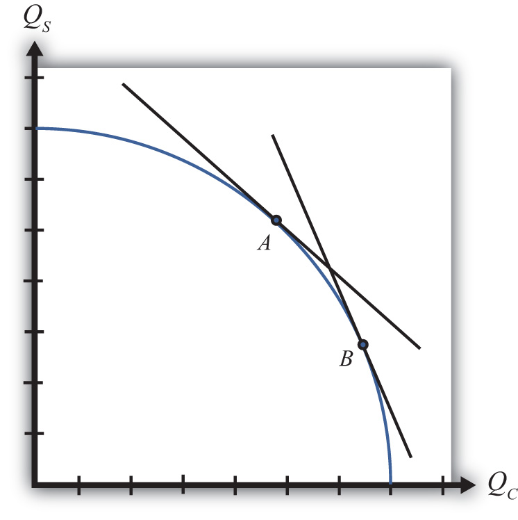

The production possibility frontier can be derived in the case of variable proportions by using the same labor and capital constraints used in the case of fixed proportions, but with one important adjustment. Under variable proportions, the unit factor requirements are functions of the wage-rental ratio (w/r). This implies that the capital-labor ratios (which are the ratios of the unit factor requirements) in each industry are also functions of the wage-rental ratio. If there is a change in the equilibrium (for some reason) such that the wage-rental rate rises, then labor will become relatively more expensive compared to capital. Firms would respond to this change by reducing their demand for labor and raising their demand for capital. In other words, firms will substitute capital for labor and the capital-labor ratio will rise in each industry. This adjustment will allow the firm to maintain minimum production costs and thus the highest profit possible. This is the first important distinction between variable and fixed proportions.
The second important distinction is that variable proportions change the shape of the economy’s PPF. The labor constraint with full employment can be written as
where aLC and aLW are functions of (w/r).
The capital constraint with full employment becomes
where aKC and aKW are functions of (w/r).
Under variable proportions, the production possibility frontier takes the traditional bowed-out shape, as shown in Figure 5.6 "The PPF in the Variable Proportions H-O Model". All points on the PPF will maintain full employment of both labor and capital resources. The slope of a line tangent to the PPF (such as the line through point A) represents the quantity of steel that must be given up to produce another unit of clothing. As such, the slope of the PPF is the opportunity cost of producing clothing. Since the slope becomes steeper as more and more clothing is produced (as when moving production from point A to B), we say that there is increasing opportunity cost. This means that more steel must be given up to produce one more unit of clothing at point B than at point A in the figure. In contrast, in the Ricardian model the PPF was a straight line that indicated constant opportunity costs.
Figure 5.6 The PPF in the Variable Proportions H-O Model
The third important distinction of variable proportions is that the magnification effects, derived previously under a fixed proportions assumption, continue to work under variable proportions. To show this requires a fair amount of advanced math, but a student can rest assured that we can apply the magnification effect even in the more complex variable proportions version of the Heckscher-Ohlin (H-O) model.
Jeopardy Questions. As in the popular television game show, you are given an answer to a question and you must respond with the question. For example, if the answer is “a tax on imports,” then the correct question is “What is a tariff?”